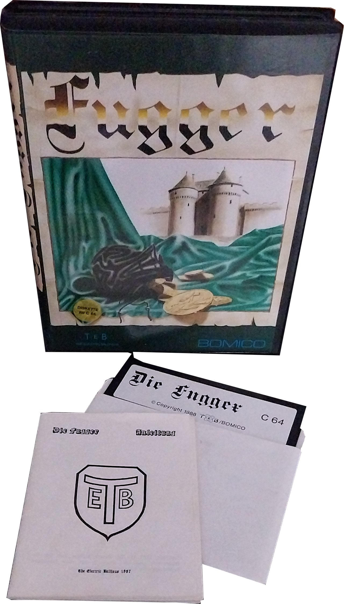
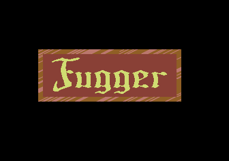
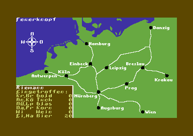
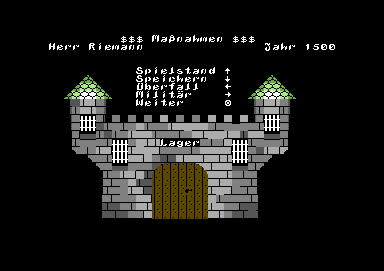

Entwickler: The Electric Ballhaus
Publisher: Bomico
Genre: Wirtschaftssimulation
Plattform: Commodore 64, Amiga
Erscheinungsjahr: 1988
In Fugger schlüpfst du in die Rolle eines aufstrebenden Kaufmanns zur Zeit der Renaissance. Durch geschickten Handel, Investitionen und politische Einflussnahme arbeitest du dich Schritt für Schritt an die Spitze der mächtigsten Handelsdynastien Europas empor. Ziel ist es, Ruhm und Reichtum zu erlangen und den Namen Fugger unsterblich zu machen.
8,5/10 – Fugger bietet für den C64 erstaunlich komplexe Wirtschaftsmechaniken und motiviert durch den stetigen Ausbau des eigenen Handelsimperiums bis heute.



Fugger überzeugt noch heute durch seine überraschend tiefgehende Wirtschaftssimulation, den historischen Hintergrund und den hohen Langzeitspielspaß. Wer klassische Handelsspiele liebt, findet hier einen echten Geheimtipp auf dem Commodore 64.